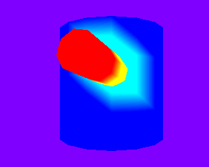
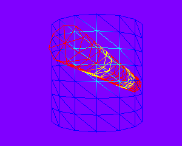

IntersectingCylinders.h
Two cylinders are initially intersecting and are part of the same collision group. Each of the cylinders has a bounding volume tree associated with it. The type of bounding volume can be one of: sphere, oriented box, capsule, or lozenge. The trees each have 512 nodes in them, so the collision detection is a bit slow. The short cylinder is colored blue. The thin cylinder is colored red. If any triangles of the short cylinder intersect triangles of the thin cylinder, the short cylinder triangles are drawn in cyan and the thin cylinder triangles are drawn in yellow. (Colors are part of a texture with bilinear blending, so the colors are smoothed.)
|  |  |